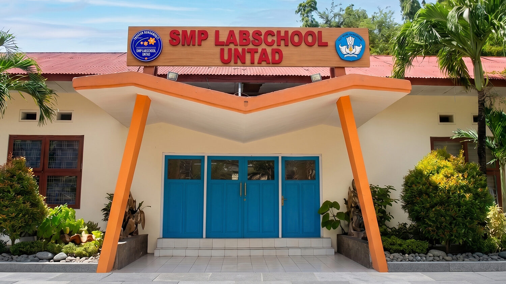
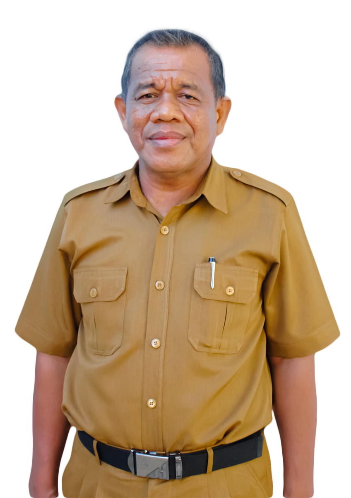
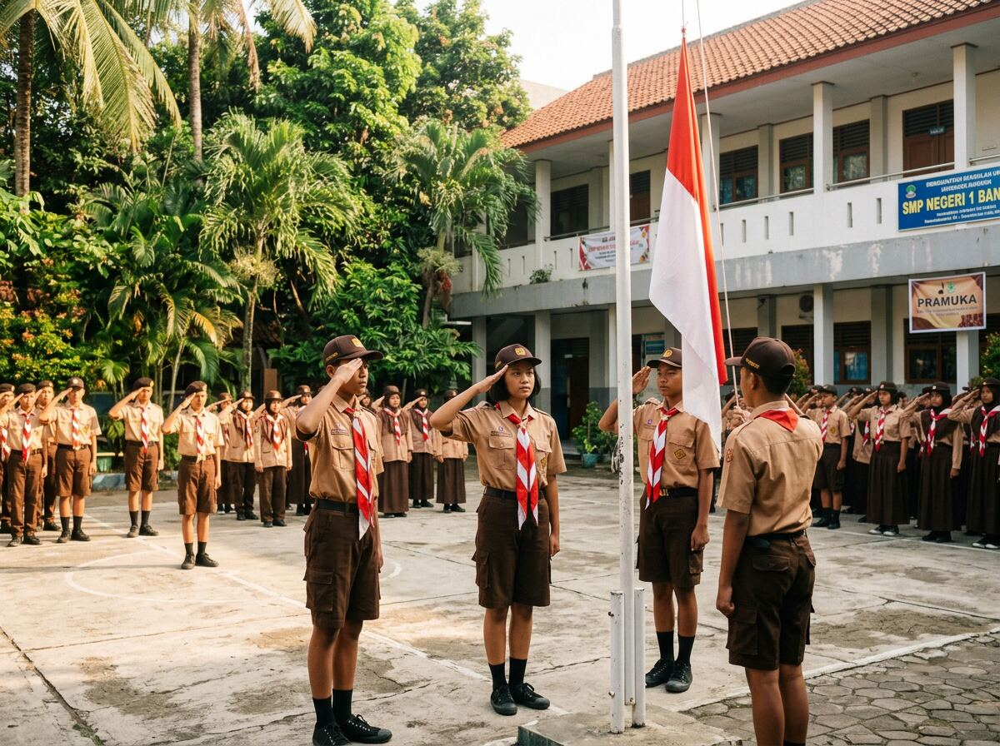
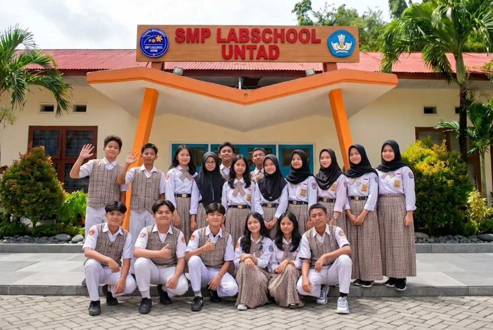

Unggulan
Unggulan
Sains & Praktikum
IPA dan matematika diajarkan dengan praktikum rutin di laboratorium serta proyek ilmiah sederhana yang melatih cara berpikir siswa.
Lihat program
SMP Labschool UNTAD Palu menghadirkan pembelajaran berbasis Kurikulum Merdeka yang dekat dengan dunia kampus: riset remaja, praktikum, dan pendampingan karakter dalam lingkungan yang aman dan menyenangkan.

Assalamu’alaikum warahmatullahi wabarakatuh. Selamat datang di SMP Labschool UNTAD. Kami percaya pendidikan terbaik bukan hanya tentang nilai di atas kertas, tetapi tentang bagaimana seorang anak belajar berpikir kritis, bekerja sama, dan menjaga akhlak.
Sebagai sekolah laboratorium di bawah Yayasan Bungamputi Universitas Tadulako, kami menghadirkan pembelajaran yang dekat dengan dunia kampus: praktikum, riset remaja, dan pendampingan personal dari guru.
Tiga pilar program yang memadukan penguatan akademik, literasi teknologi, dan pembinaan karakter siswa.
Unggulan
IPA dan matematika diajarkan dengan praktikum rutin di laboratorium serta proyek ilmiah sederhana yang melatih cara berpikir siswa.
Lihat program Digital
Digital
Kelas informatika, robotik dasar, dan proyek STEM untuk membekali siswa dengan keterampilan abad ke-21.
Lihat program
KarakterPramuka, rohis, dan kegiatan sosial membentuk disiplin, kemandirian, serta kepedulian siswa terhadap sesama.
Lihat kegiatanSebagai sekolah laboratorium, kami menghubungkan siswa dengan dunia pendidikan tinggi sejak bangku SMP.
Kolaborasi dengan Universitas Tadulako: dosen tamu, praktikum, dan pengenalan dunia kampus.
Lab IPA, lab komputer, dan perpustakaan dengan koleksi buku pelajaran serta bacaan literasi.
Pembinaan olimpiade, debat, tahfiz, dan olahraga melalui ekstrakurikuler terjadwal.
Budaya saling menghormati, layanan bimbingan konseling, dan lingkungan bebas perundungan.
Pembelajaran berdiferensiasi, asesmen autentik, dan proyek penguatan profil pelajar Pancasila.
Bahasa daerah, seni tari, dan kegiatan budaya tetap hidup dalam keseharian sekolah.
Seperti terlihat pada foto siswa kami, seragam menjadi bagian dari identitas dan kebersamaan warga SMP Labschool UNTAD. Aturan berpakaian disusun agar rapi, nyaman, dan tetap menunjukkan jati diri sekolah.

 Prestasi
Prestasi
Prestasi ini menjadi hasil pembinaan ekstrakurikuler sains yang berjalan sejak awal semester.
 Kesiswaan
Kesiswaan
Seluruh rombongan belajar ikut ambil bagian dengan sportivitas tinggi.
Kuota terbatas untuk kelas VII. Daftar online tanpa antre, dengan potongan biaya pendaftaran khusus pendaftar awal.
Ditutup 20 Desember 2026, pukul 23.59 WITA
Jadwalkan kunjungan atau langsung daftar SPMB 2026/2027 secara online.